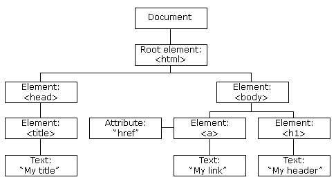

今天我们将了解WEB编程中一个重要的概念DOM（Document Object Model）文档对象模型，它帮助我们使用JavaScript（或其他编程语言）操纵文档。
一 DOM是什么
DOM是HTML和XML文档的编程接口。它不同于把html源码在浏览器窗口当做页面或使用文本编辑器当做纯文本展示，它是对文档的另一种结构化的表述。DOM把文档的所有节点都解析为一个对象，并提供了一些属性和方法来描述它们。
DOM是W3C的标准。它被分为3个部分：
核心DOM：针对任何结构化文档的标准模型
XML DOM：针对XML文档的标准模型
HTML DOM：针对HTML文档的标准模型
DOM不是一种编程语言，它是一种标准，一个模型，它与编程语言相对独立。编程语言都可以按照这种模型实现对文档的访问和处理。
注：因为我们主要是学习WEB编程，所以接下来文章中即将提到的DOM均指HTML DOM，使用到的DOM API也均是JavaScript脚本语言实现。
二 DOM的访问
我们知道，各个浏览器对JavaScript都有不同的实现，所以它们在实现DOM标准时，也会有一些差异，但它们既然都遵循了该标准，所以又呈现出了不同程度一致性。所以我们在使用DOM时，并不需要做任何特别的操作，如果碰到有差异的地方（主要体现在方法名称和参数上），只需根据不同浏览器使用他们各自实现的相关方法即可。实际上他们的实现都遵循了统一标准。
DOM把文档视做树结构：
整个文档是一个文档节点
每个 HTML 标签是一个元素节点
包含在 HTML 元素中的文本是文本节点
每一个 HTML 属性是一个属性节点
注释属于注释节点

通过这个节点树，JavaScript可以轻松的访问并操作这些节点。
三 DOM节点类型
每个节点对象有都有一个nodeType，nodeName和nodeValue属性，通过这几个属性的值，我们可以获取该节点的相关信息：
| nodeType返回节点类型 | nodeName 返回 | nodeValue 返回 | |
|---|---|---|---|
| 1 | Element | 元素名 | null |
| 2 | Attr | 属性名称 | 属性值 |
| 3 | Text | #text | 节点的内容 |
| 4 | CDATASection | #cdata-section | 节点的内容 |
| 5 | EntityReference | 实体引用名称 | null |
| 6 | Entity | 实体名称 | null |
| 7 | ProcessingInstruction | target | 节点的内容 |
| 8 | Comment | #comment | 注释文本 |
| 9 | Document | #document | null |
| 10 | DocumentType | 文档类型名称 | null |
| 11 | DocumentFragment | #document 片段 | null |
| 12 | Notation | 符号名称 | null |
四 DOM分级
一级DOM
1级DOM在1998年10月份成为W3C的提议，由DOM核心与DOM HTML两个模块组成。DOM核心能映射以XML为基础的文档结构，允许获取和操作文档的任意部分。DOM HTML通过添加HTML专用的对象与函数对DOM核心进行了扩展。
二级DOM
2级DOM在一级DOM的基础上进行了扩展，它引进了几个新DOM模块来处理新的接口类型：
DOM视图：描述跟踪一个文档的各种视图（使用CSS样式设计文档前后）的接口；
DOM事件：描述事件接口；
DOM样式：描述处理基于CSS样式的接口；
DOM遍历与范围：描述遍历和操作文档树的接口；
三级DOM
3级DOM通过引入统一方式载入和保存文档和文档验证方法对DOM进行进一步扩展，DOM3包含一个名为“DOM载入与保存”的新模块，DOM核心扩展后可支持XML1.0的所有内容，包括XML Infoset、 XPath、和XML Base。
零级DOM
0级DOM其实并不真实存在，业内通常把W3C标准化之前的DOM相关称为0级DOM。
下一篇讲详细讲解通过JavaScript如何访问，修改，增加和删除DOM节点。